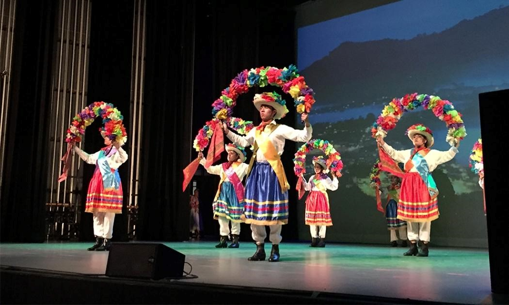
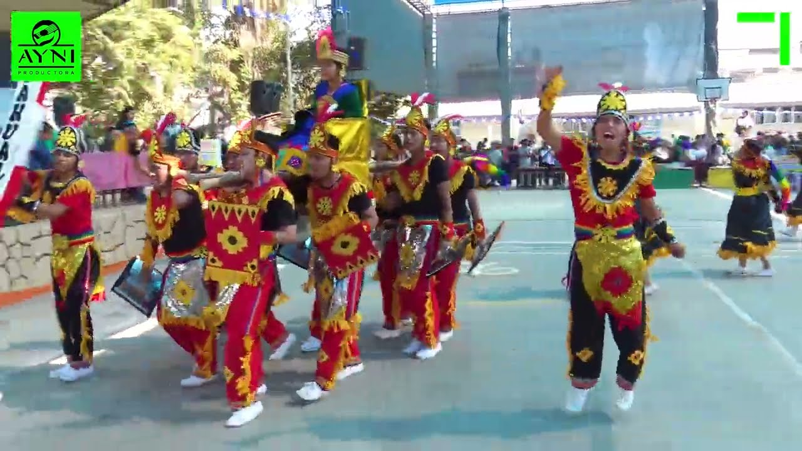

EL BARRETERO
El Barretero es un baile folclórico originario del estado de Zacatecas, México, que refleja la vida y las
tradiciones de la región minera. Esta danza es una representación simbólica del trabajo en las minas de plata, una
actividad económica históricamente importante en Zacatecas.
TEMÁTICA
El Barretero representa las labores de los mineros en las profundidades de las minas. Los bailarines realizan
movimientos que imitan el trabajo de extraer y cargar el mineral, así como la camaradería y la solidaridad entre
los trabajadores.
MÚSICA
La música que acompaña al Barretero es enérgica y rítmica, con instrumentos tradicionales como la guitarra, el
violín, la tambora y las trompetas. Las melodías suelen evocar el ambiente festivo y el espíritu de trabajo de los
mineros.
VESTIMENTA
Los bailarines suelen vestir trajes tradicionales que reflejan la vestimenta típica de los trabajadores de las
minas. Esto puede incluir camisas de manga larga, pantalones amplios, sombreros de ala ancha y botas de cuero, así
como herramientas de trabajo como picos y palas.
DANZA
La coreografía del Barretero incluye movimientos coordinados que representan las tareas cotidianas de los mineros,
como cavar, cargar y transportar el mineral. Los bailarines realizan pasos vigorosos y expresivos que reflejan la
fuerza y la determinación necesarias para trabajar en las minas.
En resumen, el Barretero es un baile folclórico emblemático de Zacatecas, México, que celebra la historia y las
tradiciones de la minería en la región. Con su música animada, vestimenta tradicional y coreografía expresiva, el
Barretero es una manifestación vibrante de la cultura y la identidad zacatecana.

DANZA DE LOS ARCOS
La Danza de los Arcos es una danza tradicional y festiva que se practica en diferentes partes de México,
incluyendo Zacatecas. Es una expresión colorida y alegre que forma parte de las celebraciones populares y
festividades religiosas en la región.
DANZA
Arcos Decorativos: En esta danza, los bailarines forman arcos con sus brazos, sosteniendo varas o cintas de
colores que crean patrones decorativos sobre sus cabezas. Los arcos pueden estar adornados con flores, cintas, y
otros elementos festivos.
Los bailarines realizan movimientos coordinados al ritmo de la música, pasando por debajo de los arcos formados
por sus compañeros. Los movimientos suelen ser elegantes y fluidos, con pasos de baile que acompañan la cadencia
de la música.
MÚSICA
La Danza de los Arcos suele ir acompañada de música en vivo, que puede incluir instrumentos como guitarras,
violines, tamboriles y sonajas. La música es alegre y festiva, creando un ambiente de celebración y
alegría.
VESTIMENTA
Los bailarines suelen vestir trajes tradicionales que reflejan la cultura y las tradiciones de la región. Estos
trajes pueden variar según la ocasión y la localidad, pero suelen ser coloridos y llamativos, con adornos típicos
de la región.
En resumen, la Danza de los Arcos es una expresión festiva y comunitaria que forma parte de las tradiciones
culturales de Zacatecas y otras regiones de México. Con sus arcos decorativos, movimientos gráciles y música
alegre, esta danza es una celebración vibrante de la vida y la identidad cultural de la región.

BAILE DE LA BARRANCA
El “Baile de la Barranca” es una danza tradicional originaria del estado de Zacatecas, México. Este baile refleja
las tradiciones culturales y folclóricas de la región, y suele ser parte de las festividades locales y
celebraciones populares en Zacatecas.
TEMÁTICA
El Baile de la Barranca está inspirado en la vida rural y las actividades agrícolas típicas de la región. La danza
representa escenas de trabajo en el campo, como la siembra, la cosecha y el arado de la tierra, así como la
celebración de la naturaleza y la vida rural.
LA DANZA
Los bailarines realizan movimientos que imitan las labores agrícolas, como el movimiento de sembrar las semillas,
el arado de la tierra y la recolección de cultivos. Los pasos suelen ser enérgicos y coordinados, con una
combinación de movimientos individuales y grupales.
MÚSICA
La música que acompaña al Baile de la Barranca es alegre y festiva, con un ritmo animado que invita al baile. Los
instrumentos tradicionales utilizados pueden incluir guitarras, violines, tamboriles y sonajas, creando una
atmósfera festiva y animada.
VESTIMENTA
Los bailarines suelen vestir trajes típicos que reflejan la vestimenta tradicional de los campesinos y
trabajadores del campo. Esto puede incluir camisas y pantalones de colores vivos, sombreros de ala ancha, y otros
accesorios que complementan el estilo del baile.
En resumen, el Baile de la Barranca es una expresión folclórica y festiva que forma parte de las tradiciones
culturales de Zacatecas. Con su temática agrícola, movimientos enérgicos y música animada, esta danza es una
celebración de la vida rural y la identidad cultural de la región.
BAILE DE LA BOTELLA
El "Baile de Botella" es una danza tradicional y festiva que se practica en diferentes partes de México,
incluyendo Zacatecas. Aunque el nombre puede variar según la región, este baile se caracteriza por la destreza y
habilidad de los bailarines para mantener una botella sobre su cabeza mientras realizan movimientos coordinados al
ritmo de la música.
HABILIDADES
La característica principal del Baile de Botella es la habilidad de los bailarines para equilibrar una botella
llena de líquido sobre su cabeza mientras realizan movimientos de baile. Esto requiere un buen equilibrio,
coordinación y concentración por parte de los bailarines.
MÚSICA
El Baile de Botella suele ir acompañado de música en vivo o grabada, que puede incluir géneros musicales como la
música ranchera, norteña, o cumbia, dependiendo de la preferencia local. El ritmo de la música guía los
movimientos de los bailarines y añade un ambiente festivo al baile.
DANZA
Los movimientos realizados durante el Baile de Botella pueden variar, pero suelen incluir pasos de baile
tradicionales como zapateados, giros, y movimientos de cadera. Los bailarines pueden bailar en parejas o en
grupos, y a menudo improvisan movimientos según la música y el ambiente.
VESTIMENTA
La vestimenta de los bailarines durante el Baile de Botella puede variar según la ocasión y la región, pero suele
incluir trajes típicos que reflejan la cultura y las tradiciones locales. Los trajes pueden ser coloridos y
llamativos, con accesorios como sombreros, fajas, y botas de vaquero.
En resumen, el Baile de Botella es una expresión folclórica y festiva que forma parte de las tradiciones
culturales de Zacatecas y otras regiones de México. Con su destreza, habilidad y ambiente festivo, esta danza es
una celebración de la cultura y la identidad mexicana.
BAILE
VIDEO
ÉPOCA DEL AÑO
Danza el barretero
Esta danza es originaria de México y está relacionada con la minería. Se lleva a cabo en diferentes épocas
del año, pero es comúnmente asociada con festividades locales en áreas mineras, como en el estado de
Zacatecas, donde se celebra la Feria Nacional de Zacatecas en junio.
Danza de los arcos
La Danza de los Arcos es una danza folclórica tradicional de México que se realiza en diferentes regiones
del país. No está necesariamente asociada con una época específica del año, pero es común verla en
festividades religiosas, fiestas patronales y eventos comunitarios a lo largo del año.
Danza de la barranca
Esta danza también es originaria de México y está relacionada con las actividades agrícolas y conmemora el
ciclo de siembra y cosecha. Se lleva a cabo principalmente durante festividades locales en regiones agrícolas,
como en el estado de Hidalgo, donde se celebra la Feria de la Barranca en octubre.
Danza de la botella
La Danza de la Botella es una danza folclórica de México que se realiza en diferentes regiones del país. No
está asociada con una época específica del año, pero es común verla en celebraciones festivas y eventos
culturales a lo largo del año, como ferias locales y festivales folclóricos.